Robot Wiring Guide
Introduction to Robot Wiring
The wiring of a robot serves two primary purposes. The first purpose is to provide electrical power to the devices on a robot. The second is to provide a communication network for the many devices that make up a robot’s control system.
Teams should follow best practices when wiring their robots. This will help to ensure that the placement, connections, and security of their wires will lead to improved robot performance, eliminate intermittent electrical problems, and allow for easy troubleshooting and resolution of electrical and/or signal-related problems.
Important
If you redesign the footprint of your robot, leave enough space for the wiring required.
This guide shows the basics of properly wiring a robot, how to improve wiring reliability, and how to handle hardware issues associated with wiring.
As always, the FTC Q&A Forum and Competition Manual rules take precedence over recommendations made here. Please refer to these sources before embarking on the electrical wiring task.
Note
This guide primarily uses the REV Robotics Expansion Hub in its examples, but the guidelines apply equally well to the REV Robotics Control Hub. These Hubs provide electronic input/output (or “I/O”) ports that are used to “talk” to a robot’s motors, servos, and sensors. The layout of I/O ports is the same for both the Expansion Hub and Control Hub.
One of the important differences between the Expansion Hub and the Control Hub is the external Android device used with the Expansion Hub, compared to the internal Android device built into the Control Hub, to accomplish the same task of wireless communication with the driver station. Sample wiring diagrams can be found in the Robot Controller Overview.
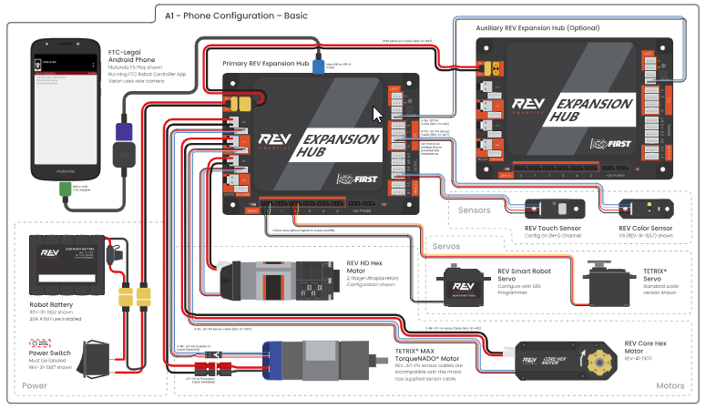
Smartphone/Expansion Hub Configuration
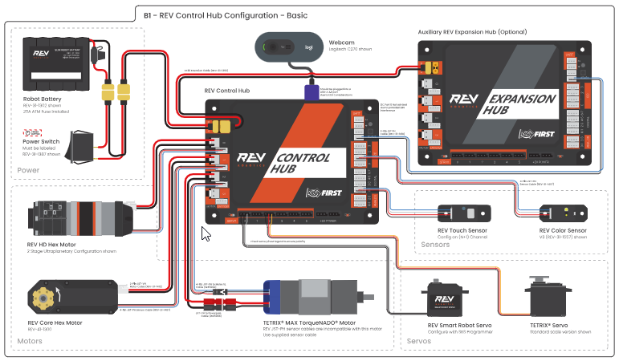
Control Hub/Expansion Hub Configuration
Here is a list of items that can improve the security and organization of a robot’s wiring system. None of these are included in the FTC Kit of Parts, but each one addresses a specific best practice covered later in this guide.
Item |
Example Source |
Cost |
Qty |
|---|---|---|---|
Grounding wire (REV Resistive Grounding Strap, REV-31-1269) |
REV Robotics |
$5.00 |
1 |
Ferrite chokes (REV Ferrite Cable Clips, REV-39-1224) |
REV Robotics |
$4.50 |
4 |
Spiral wire sheath (Spiral Sleeving, 7378K43) |
McMaster-Carr |
$6.00 |
10 ft. |
XT30 power distribution block (REV-31-1293) |
REV Robotics |
$13.50 |
1 |
Rubber grommets (Grommet Assortment, 9600K25) |
McMaster-Carr |
$27.00 |
100 |
Hook and loop fasteners (Velcro), 94985K41 |
McMaster-Carr |
$2.00 |
per ft. |
Snap-together fasteners (3M Dual Lock), 94935K17 |
McMaster-Carr |
$3.65 |
per ft. |
Best Practices
Appropriate Tools
Using the correct tools will make wiring tasks easier, and the result will be more reliable.
If you are not making your own custom cables and connectors, the only tool you might need is a small pair of wire snippers or diagonal cutters. These are useful for trimming zip ties. Poorly trimmed zip ties present a sharp point and can be a hazard.
When changing or remaking crimped connections, you will need a pair of wire strippers and possibly a dedicated crimping tool. Wire strippers allow you to strip the insulation off different wire gauges while ensuring that none of the copper strands are cut. Generic crimping tools are suitable for common spade lugs, but for custom connectors (like Anderson Powerpoles) a dedicated crimper may be required.
When shortening or extending wires, or when making a power distribution bus, a soldering iron and heat gun are useful tools. For electronics work, a temperature-controlled iron is recommended, and a small heat gun can be used for typical diameter heat shrink.
When running multiple wires (like several servo wires), it can be a future time-saver to apply simple labels to wires at the point where they plug in. These can be as simple as pieces of tape folded over the wire and named with a marker.
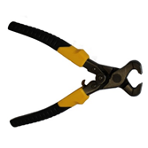 Wire snippers |
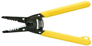 Small nippers for cutting zip ties |
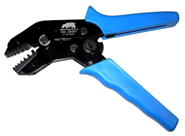 Ferrule crimpers |
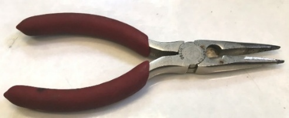 Needle nose pliers |
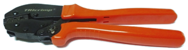 Anderson Powerpole crimpers |
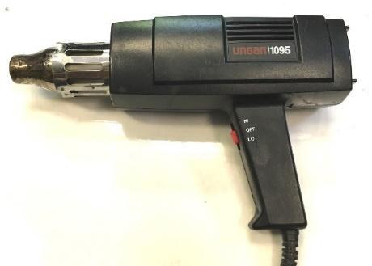 Heat gun for shrink wrap insulation |
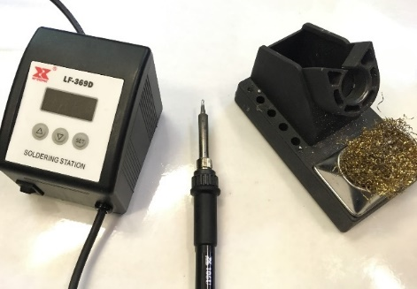 Temperature-controlled soldering iron/station |
Strain Relief
Strain relieving is the technique used to reduce the amount of stress at a wire connection. In our case, this connection is typically a two-part connector. Proper strain relief will prevent the connector from becoming unplugged, or from having the wires break loose from the connector itself. In general, all connections should be properly strain relieved.
Immobilize the wire an inch or two from the connector and leave a little slack on the connector side. This prevents unintended tension on the wire from damaging the connector and allows the connector to be unplugged, if desired, for testing or module replacement. This can easily be done with a few zip ties. It may be acceptable to mount the connector more rigidly, but only if all parts involved are also mounted solidly on a rigid panel.
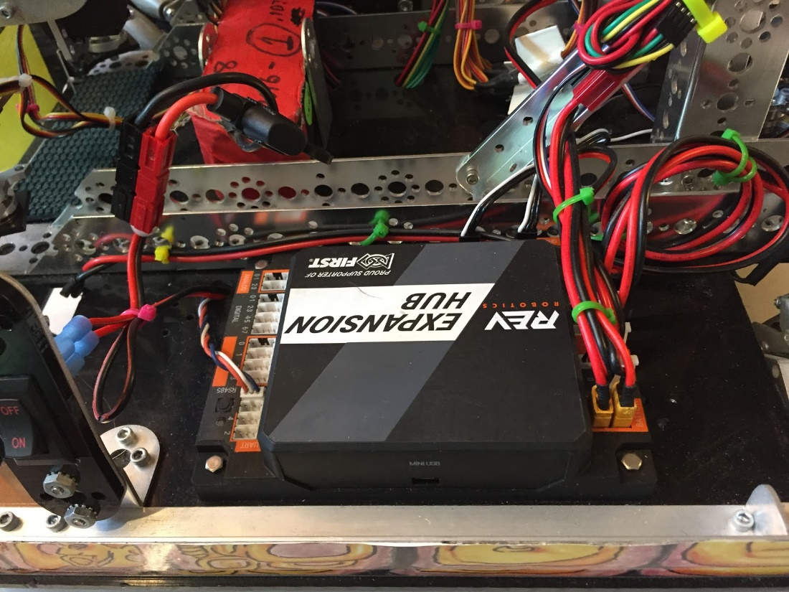
Strain relief and wire restraints
Wires are channeled with zip ties.
Wires are also bundled based on their destination, such as motors, and then neatly coiled.
The 12V battery is held in place by a metal TETRIX bracket and Velcro (under the battery), and the main power connector is also constrained to the c-channel. The power switch is mounted in an easily accessible location, protected behind a side shield with a finger hole.
The REV Expansion Hub is mounted to a plastic base, which extends 1/8” beyond the metal chassis to minimize ESD (electrostatic discharge).
Important
Every wire connection is a possible point of failure. This applies to all electronics.
Securing Wires and Connectors
In general, all wires should be properly secured. Properly securing wiring will:
Minimize connection errors with the Android phone.
Prevent wires from moving into pinch points (e.g., between two gears or into a movable mechanism).
Prevent entanglement with field elements and other robots.
Provide easier access for maintenance.
Prevent strain on wiring components.
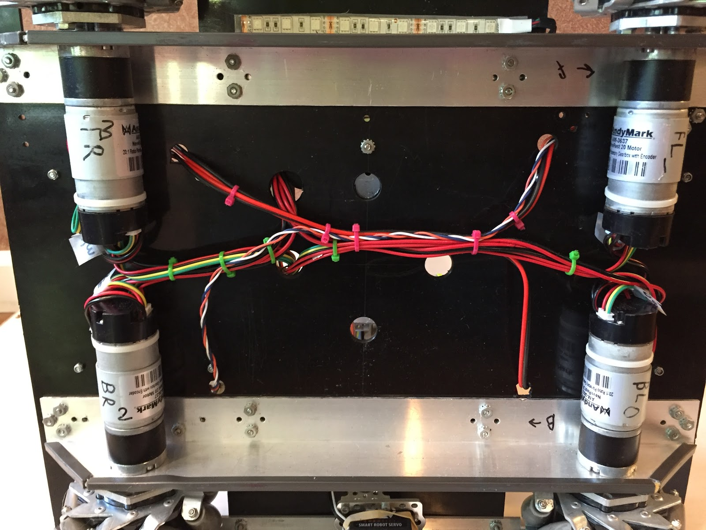
Securing wires
The power and encoder wires for this drive train are strain relieved at the motors themselves.
Wires are secured to each other and to the plastic chassis baseplate.
The metallic chassis beams are insulated with plastic strips to prevent electrostatic discharges as the robot rolls off its metal platform.
Wires should be tied down (secured) at regular intervals to prevent them from moving or shaking loose during a match. It is best to run wires along stationary parts of a robot. Zip ties offer a sturdy way to secure wires, but electrical tape or Velcro straps can also be used.
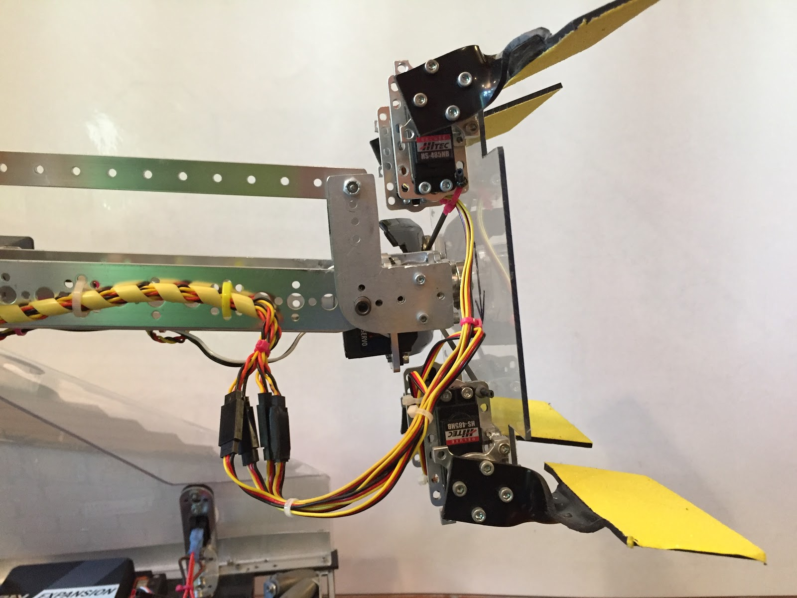
In-line connections
A group of servo extension wires is used to accommodate a long arm.
Each pair of mating servo connectors is firmly held together, either with a plastic shroud or with electrical tape.
Each side of the connector bundle is also stabilized with a zip tie, and a service loop has been created to permit the end-effector (grabber) to rotate without pulling on the wires.
In some instances, the connectors on the ends of wires should also be secured in place. This is true for USB connections and some 12V power connectors. These connectors are susceptible to vibration or impacts, which may cause temporary or permanent loss of control.
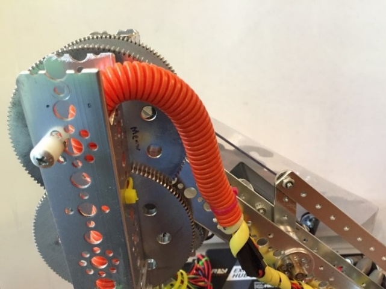 Wires near moving parts |
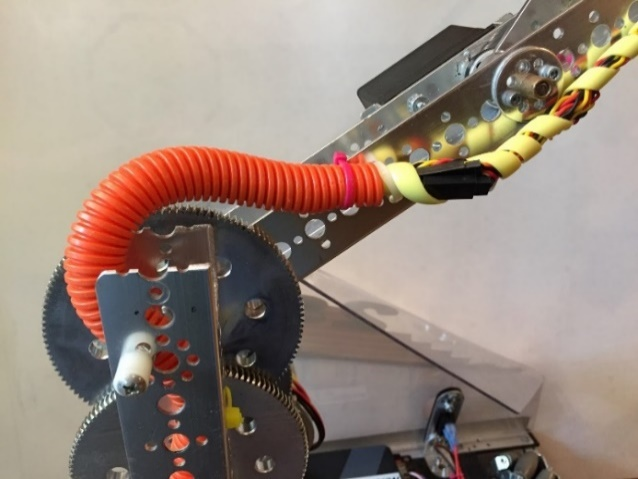 |
On this robot, many servo wires had to pass a rotating arm joint with several gears. To prevent loose wires from being pinched, the wires were bundled and then wrapped in a split sheath (orange). The sheath was anchored to the base at one end, and to the arm at the other end. A service loop of extra cable was created to allow full rotation of the arm without putting tension on the wires.
Connectors can be secured using zip ties or Velcro, or teams can use 3D printed connector mounts. REV Robotics provides a USB connector restraint for its REV Expansion Hub.
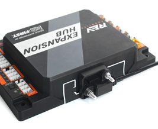 USB connector mount |
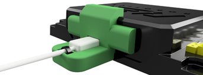 3D printed connector mount |
If interconnected connectors are used to extend sensor/servo cables, or extend 12V DC power cables, the connectors should be firmly secured to each other. Electrical tape is often the simplest and most effective way to do this.
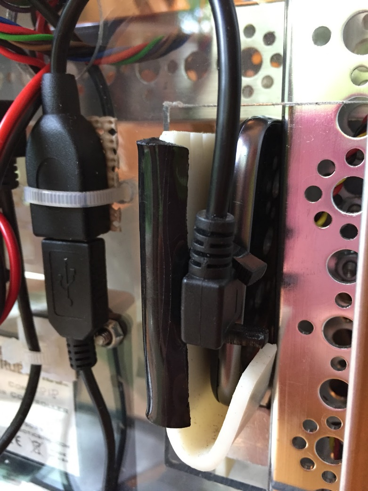
Stabilizing USB cables
The USB plug is constrained with the addition of a custom clamp.
The use of a right-angled USB connector helps to keep the wiring near the robot structure.
The female USB-A connector is zip-tied in place to prevent vibrations and to stop the cable from falling free when the phone is removed.
Note
Locating the phone next to a metal beam may not be optimal, as it may reduce wireless signal strength, but it can be a reasonable compromise to achieve the desired camera location.
If wires need to be shortened or extended, soldering provides a robust yet compact splicing method. In this case, all soldered joints should be protected with heat shrink tubing. Slightly oversized tubing should be cut to length and placed over one wire before soldering the two wires together. Then a heat gun can be used to shrink the tubing to hold it in place. Many sizes and colors of heat shrink tubing can be purchased from most electronics suppliers.
Wire Management
The most important step towards neat wiring is the implementation of proper wire management. Wire management involves bundling and routing wires along a defined path to the various electrical parts.
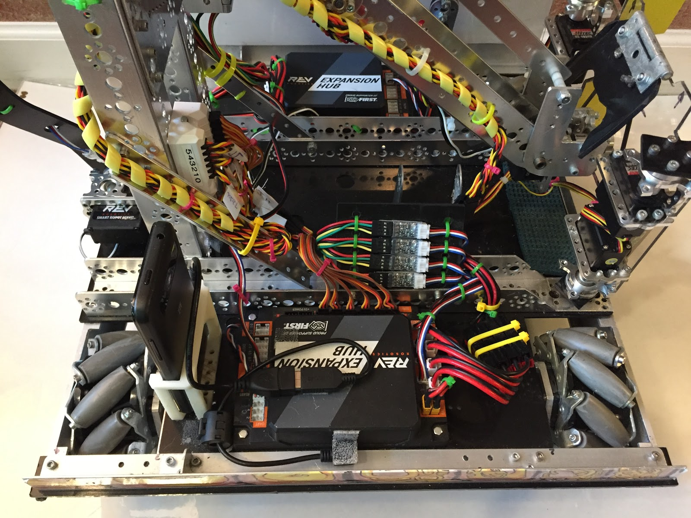
Multiple wire management types
This robot utilizes multiple actuators, requiring level converters, boosters, and wire extensions. Clutter is eliminated by organizing a logical flow through the robot, then bundling and constraining wire clusters wherever possible.
Four encoder level converters are mounted to a plastic plate which is bolted to the main chassis. Wires to and from these converters are strain relieved on either side.
Motor wires pass through Anderson Powerpole connectors and are bundled and restrained.
Servo PWM cables (and their extensions) are grouped in a flat bundle and routed to a servo booster module. Wires from the booster module are bundled and wrapped with a spiral sheath which runs all the way up the arm support to the rotating grabber. A service loop is created and attached to the arm on one side, and the grabber on the other side.
Tips to keep in mind to ensure neat, robust wiring:
Keep the wiring stationary.
Protect the wiring.
Where possible, make sure all cables are the correct length.
Bundle cables together if they are running to a common destination.
Use right-angle USB connectors if they keep wiring more compact.
Use wire management hardware.
Self-adhesive cable tie mounts help attach wires to surfaces without holes.
Grommets protect wires from damage from sharp edges.
Wire sheaths allow teams to quickly protect at-risk wiring.
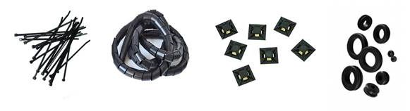
Wire management hardware
Wires on Moving Parts
Most robots have one or more components that move relative to the main drive chassis. This could be things like a pivoting arm, an extending collector, or a shooter turntable. When these components have motors and sensors attached, it is important to ensure that the connecting wires can accommodate the movement. There are several precautions that can be taken to ensure that wires do not get pinched, twisted, or entangled.
Constraining wires is the first line of defense. An unconstrained wire is likely to get caught and pulled as one component moves past another. However, moving parts often need “extra” wire when they are fully extended or rotated, so it is important to plan this extra wire when the part is retracted. The extra wire should be formed into a “service loop,” which keeps wires bundled together and provides predictable movement. These bundled wires can be further protected by an expandable, spiral, or split sheathing. This sheathing serves as a flexible outer protector for the wire bundle as it moves near potential pinch/entanglement points.
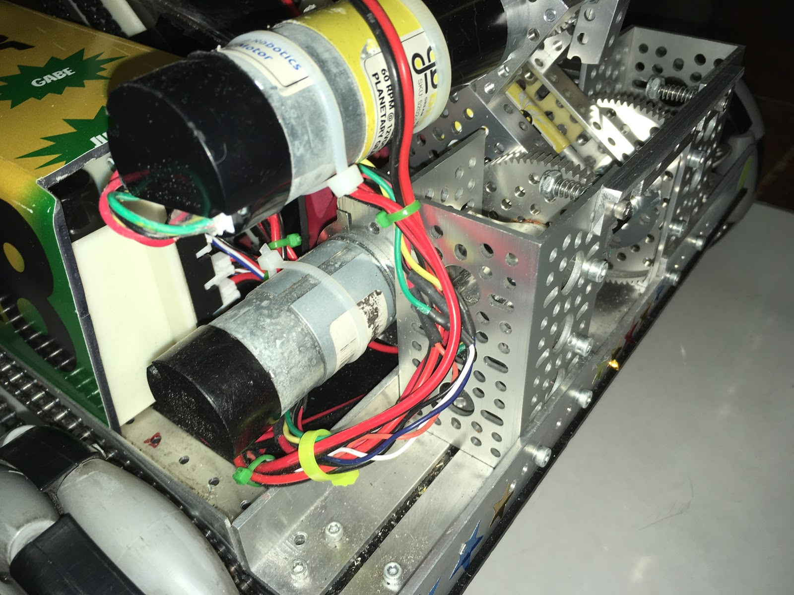
Wires near moving parts
The upper motor is mounted to a movable arm, which rotates relative to the robot chassis.
The motor’s power and encoder wires have been bundled (yellow and green zip ties) into a service loop.
Wires are anchored to the motors (white zip ties). This maintains control over the wires when the arm rotates and ensures that none are pinched.
Battery Security
The placement, connectors, and methods for securing the battery properly will ensure safety and enhance the life of the battery.
The battery is often one of the heaviest parts of the robot, and its placement can have a dramatic effect on drivability and stability. A good rule of thumb is to place the battery as low as possible for stability. Omnidirectional drives require constant pressure on all wheels, so position the battery to help with even weight distribution.
Since batteries need to be removed to be charged, extra thought should be given to how they are mounted in the robot. A loose battery can get caught in moving parts and be damaged, or can tug on the battery connector and cause the robot to lose power. Since they are heavy, batteries tend to want to shake free as the robot maneuvers, so it is important to ensure that they are fixed in place. This can be achieved by creating a mechanical “receptacle” that snugly holds the battery in place. They can also be restrained with Velcro attached to the battery and robot, or by using a Velcro strap to hold the battery against the frame.
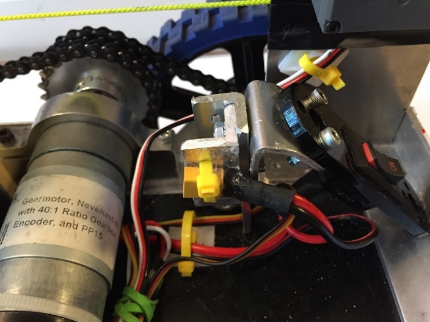 Battery security |
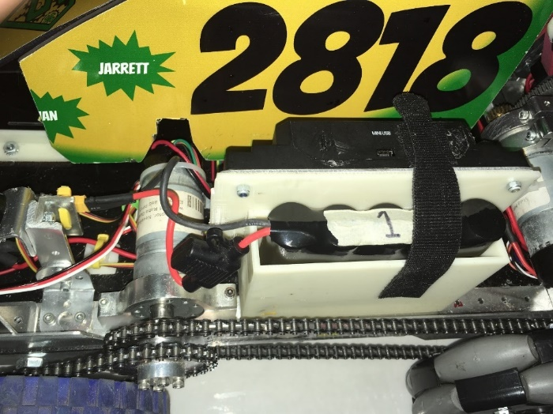 |
A REV Robotics flat battery pack is mounted vertically next to an Expansion Hub.
A 3D printed container was created to loosely constrain the battery, and a Velcro strap was added to prevent the battery from bouncing out during robot deployment.
Note
In the case of a Control Hub, this mounting method could block radio waves traveling to and from the Hub’s wireless adapter.
For security, the battery connector (yellow XT30 plug) is plugged into a mating connector on the robot, which is zip tied in place.
Some teams use zip ties to secure their battery, but unless the team only has one battery, these zip ties will need to be cut and replaced each time the battery is removed to be charged. Consider using a method that can be “un-done” rather than replaced each time. If zip ties are used, make sure the ties are not overtightened, to prevent damaging the internal connections of the battery.
Care should also be taken to make sure the mounting points for the battery do not puncture or break the insulation of the battery or battery leads. Ensure there are no sharp edges that can cut into the battery.
Battery Safety
Batteries are used to store energy, and so it is important to store and manage that energy safely. The following guidelines should always be followed:
For safety reasons, batteries should not be left unattended while charging. The charging process may cause faulty batteries to overheat and create a fire hazard.
Be sure to protect the battery terminals while storing batteries. Do not store or transport batteries with other loose metallic items, which could inadvertently cause a short circuit across the battery terminals.
Under no circumstances should there be exposed ends on both battery wires. Bare wires that touch will short out and damage the battery and may create a fire hazard.
12V Power Switch
A single 12V power switch is required on all FTC robots. Since quick access to this switch may be required by field personnel, it should be mounted in a readily accessible location. This will typically mean near the exterior of the robot, facing outwards. However, the switch should be protected so that it cannot be turned off accidentally through contact with a field element or other robot.
Here are some ways to achieve this:
Do not mount the switch outside, or flush with, the chassis perimeter of the robot.
Angle the switch upwards to prevent contact from basic robot movement.
Place the switch behind a cover plate or side shield with a small opening for manual operation.
Ensure that game pieces cannot fall onto the switch.
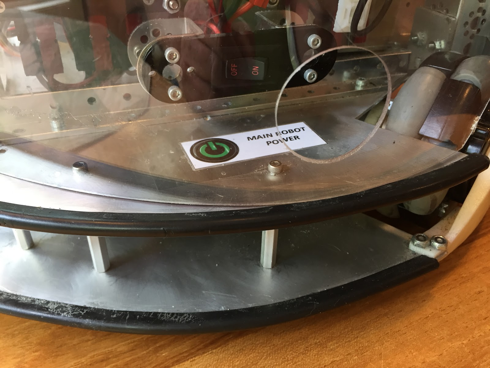
Power switch placement, side shield, and chassis insulation
The power switch is mounted inside the robot frame using TETRIX hardware, facing outwards for easy operation. The switch is behind a transparent (PETG) side shield, with a hole cut for easy access. This protects the switch from accidental contact, but still provides FTAs (FIRST Technical Advisors) with great visibility and access.
Side shields are also used to protect internal electronics from entanglement and possible ESD events. Black rubber edge guards also protect the chassis plates from external electrical contact.
12V Power Distribution
To enable full functionality of the robot’s electronics, it is important to have stable 12V power and sufficient current capacity for all 12V wiring. FTC-approved 12V power components are designed with appropriate connectors and wire gauges to support a typical robot. A simple REV power system would supply 12V from the fused battery, through a power switch, into a REV Expansion Hub. Power would be daisy chained out of the parent hub into an optional child hub.
However, for robots that have high current loads (from many motors) or have a larger number of 12V components (like Servo Power Modules or SPARK Mini motor controllers), it may be desirable to utilize a 12V power distribution bus. A power bus takes a single input power feed and splits it into several 12V outputs, each of which can power a dedicated device instead of daisy chaining the power from one component to the next.
A power bus can be created by building a custom wiring harness or by purchasing a commercial power distribution block.
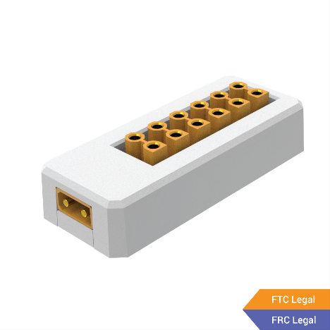 Power distribution blocks |
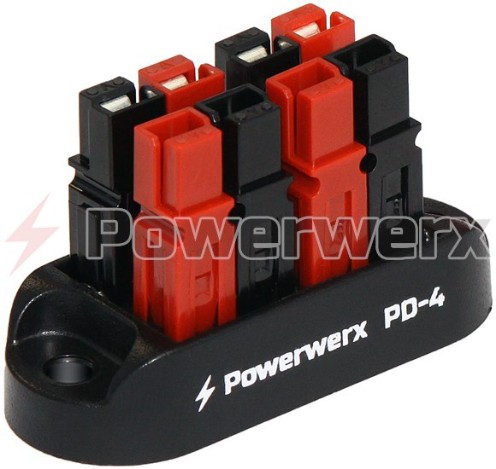 |
Protective Side Shields
Most FTC games involve Robot-to-Robot and Robot-to-Game element contact. This contact may be intentional or accidental, and it can sometimes extend into the inner workings of your robot. To prevent damage or interference (such as ESD), it is desirable to prevent external objects from being able to contact critical internal electrical components.
One popular way to prevent undesired intrusion is to add one or more side shields to your robot. These should be constructed from non-conductive materials. They can also be used to add strength or industrial design elements to your robot. Shields are also useful for preventing loose, game-scoring elements (balls, blocks, etc.) from falling into your robot and counting against any maximum holding allowance.
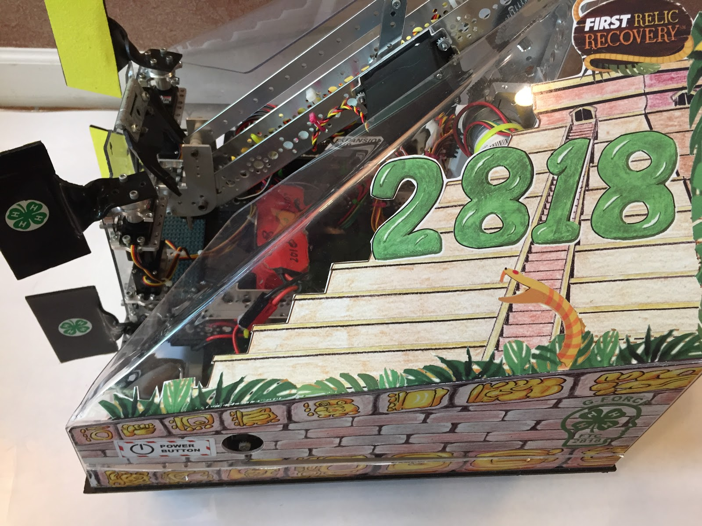
Side shields
They protect the inner workings of the robot from contact from other robots.
They prevent game elements from getting caught inside the robot.
They protect the power switch.
They provide a surface for theme decoration and team identification.
Durable, clear plastic side shields can be constructed using polycarbonate, PVC, or PETG to allow internal visibility for status lights or mechanisms.
Caution
Plexiglass (acrylic) is a commonly available clear plastic, but it is quite brittle, so it may not be suitable for protective shields.
Wi-Fi Considerations
The Robot Controller device (Control Hub or Android smartphone) uses a wireless radio to communicate with the Driver Station. Choose the placement of the Hub/phone with the following considerations:
It is important to protect the Control Hub or phone from robot-to-robot contact. Attach the Hub or phone to the robot in a place protected from physical impact.
Choose a location on the robot where the radio waves traveling to or from the Control Hub or phone will not be blocked/reflected by large pieces of metal or by a 12V battery or a motor.
Choose a location on the robot where the radio waves traveling to or from the Control Hub or phone will not be disrupted by electromagnetic interference that could potentially be generated by a 12V DC motor.
Reduce the risk of an electrostatic shock between the phone and the metallic frame of the robot by mounting the phone on an insulator, like plastic or wood.
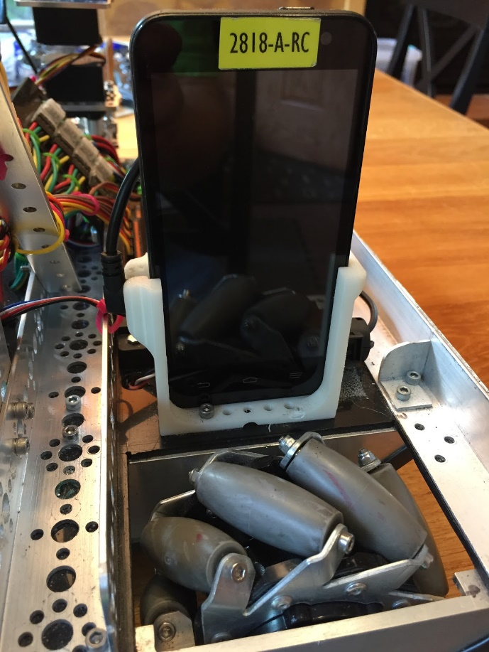 Phone mounting |
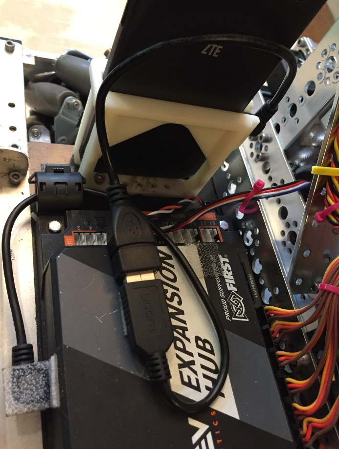 |
The Robot Controller phone is held in position using a 3D printed mount.
The mount is bolted to a plastic base plate, keeping the phone separated from all metalwork.
USB connector is strain relieved by the 3D printed mount.
A two-part cable is used to connect the phone to the REV Expansion Hub. This permits the two devices to be frequently disconnected without wear and tear on either device.
A ferrite choke is attached to the USB cable and held in place with Dual Lock. The Expansion Hub is also bolted to a plastic base plate to provide additional ESD immunity.
ESD Mitigation
An electrostatic discharge (ESD) event occurs when a charged object (like a robot) discharges to a neutral or oppositely charged object. Because wiring choices affect how well a robot’s electronics are isolated from its frame, the same practices covered throughout this guide (strain relief, wire routing, keeping connectors away from exposed metal) also reduce ESD risk. A few wiring-specific tips:
Use ferrite chokes on sensor, encoder, and servo cables to help block the current spikes seen in an ESD event.
Keep connectors and exposed wire ends away from the metal frame of the robot; an air gap of at least 3/8” (10 mm), or a wrap of electrical tape, reduces the chance of a shock disrupting a port.
Wheel material and design can affect how much static charge a robot builds up. Mecanum wheels, for example, may produce more static than other wheel types.
For a complete explanation of ESD, how robots become charged, and full grounding and insulation procedures, see Managing Electrostatic Discharge Effects.
Driver Station
Not all wiring issues are on the robot. The driver station also has several components that must have reliable connections to ensure proper operation. Many teams who bring their phones and game controllers to the competition field as a handful of loose pieces will see problems with loss of control before or during a match. If a game controller cord gets tugged, it may cause a brief USB disconnect, which will cause the controller to stop communicating with the robot. This can cause loss of control of the robot at a critical time.
To ensure stable and consistent operation, it is recommended to mount the Driver Station phone, USB hub, and game controller connectors to a rigid base plate. This base plate should be non-metallic (wood or plastic), and it can also provide an easy way to store the game controllers. Items can be attached to the base plate with Velcro, zip ties, Dual Lock, or even hot glue. All connectors should be strain relieved.
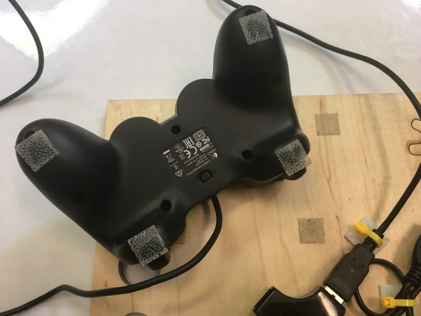 Driver station |
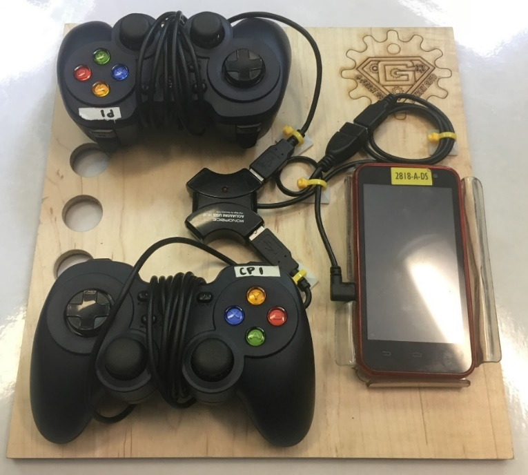 |
The game controllers are attached to the board using hook and loop fasteners.
The Micro USB connector entering the phone is strain relieved. It has enough free wire to be easily unplugged to charge the phone.
The phone holder, USB hub, and connectors are all anchored in place to prevent them from disconnecting due to jostling.
Adapting Power Systems
Types of Wires and Connectors
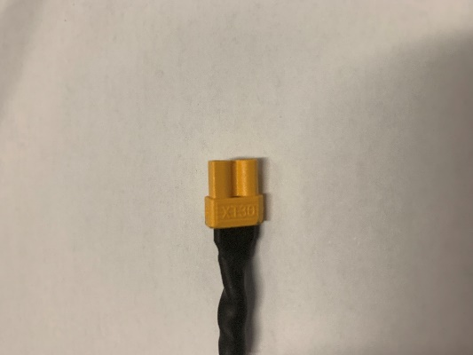 XT30 connectors (male and female) |
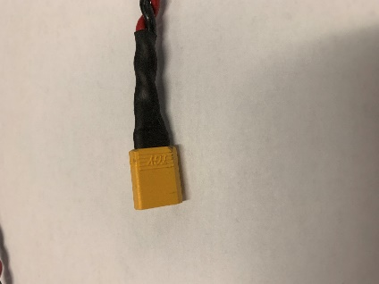 |
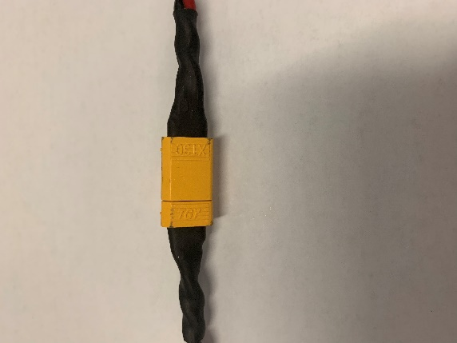 |
REV Robotics: The REV system uses XT30 connectors for the power wires. These connectors are used in the RC vehicle industry and are designed to withstand repeated connect and disconnect cycles. It is not necessary to replace these connectors with Anderson Powerpoles. However, there have been credible reports of occasional disconnects between the XT30 connectors provided with the REV Robotics hardware.
If you suspect that you might have a loose XT30 connection, conduct a careful physical inspection of the connection. Check to make sure the connectors fit snugly together and there is a slight amount of retention between the connectors when you try to pull them apart. Also check to make sure that power is not disrupted when the ends of the power cables that connect through the XT30 connectors are jiggled. If you do find a loose connection, first try replacing the cable, or if the bad connector is mounted on the Hub, you can attempt a repair yourself or contact REV Robotics support.
If you prefer to use Anderson Powerpoles as your primary connectors, you can attach an XT30/Anderson Powerpole converter cable to the Hub and strain relieve it properly. Once this converter is plugged into the Hub, it can be left in place, and the battery can connect or disconnect using the Anderson Powerpole connection. This will reduce the wear experienced by the XT30 connectors.
Warning
Do not reverse the polarity of the input DC power. Although the REV Robotics Hubs have built-in reverse polarity protection, it is still possible to damage Hubs when reverse polarity power is applied.
Making an Adapter
Teams may wish to replace the connectors on their batteries and install more reliable connectors in their place. If teams choose to do this, the old connectors can be useful.
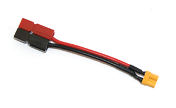
Anderson Powerpole and XT30 connectors
When removing the unwanted connectors from the battery, do not cut the wires flush with the end of the connector. Instead, leave a 1/2” length of wire attached to the connector.
Installing Anderson PowerPoles
The following steps explain how to install Anderson Powerpoles on a battery (TETRIX, REV, and current MATRIX). The same steps can be modified to install Anderson Powerpoles on any wire.
Remove the fuse from the battery.
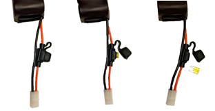
Fuse removal
Cut one of the wires close to the attached Tamiya connector. Do not cut too close to the battery or the fuse housing, which will make installation difficult or impossible.
Strip the wire to the Anderson Powerpole specifications.
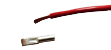
Strip the wire
Crimp the connector to the wire. Make sure the wire is in the proper orientation before doing this – the Powerpoles need to connect properly.
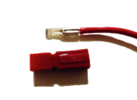
Crimped connector and red housing
Snap on the plastic housing.
Attach red housing to the positive wire, and black housing to the negative wire.
Repeat steps 2 through 5 on the remaining wire.
Slide the side locking mechanism of the adjacent red and black housing. The red positive raised side should slide into the black negative recessed side.
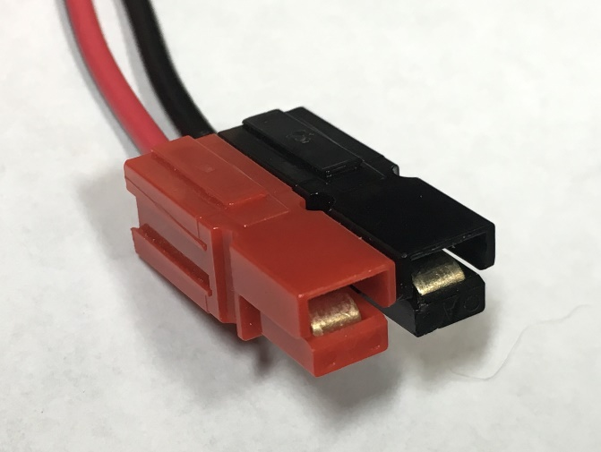
Proper orientation of housing
Slide and snap the red housing to the other red housing, and repeat for the black housings.
If applicable, reinsert the fuse.
Repeat the procedure on the battery charger.
Adapting Logic Levels
Level Shifters
There are two voltage levels commonly used for logic on integrated circuits (like the chips in a REV Robotics Expansion Hub): 5V and 3.3V. The REV Expansion Hub uses 3.3V logic levels, but some third-party devices work using 5V logic levels. If you would like to use a 5V I2C sensor with the REV Robotics Expansion Hub, then you will need:
Logic level converters (also known as level shifters) to convert the signals to and from the sensor.
A REV Robotics Sensor Adapter Cable (REV-31-1384) to connect the 5V sensor to the logic level converter.
A complete explanation can be found in the REV Robotics Expansion Hub Getting Started Guide.
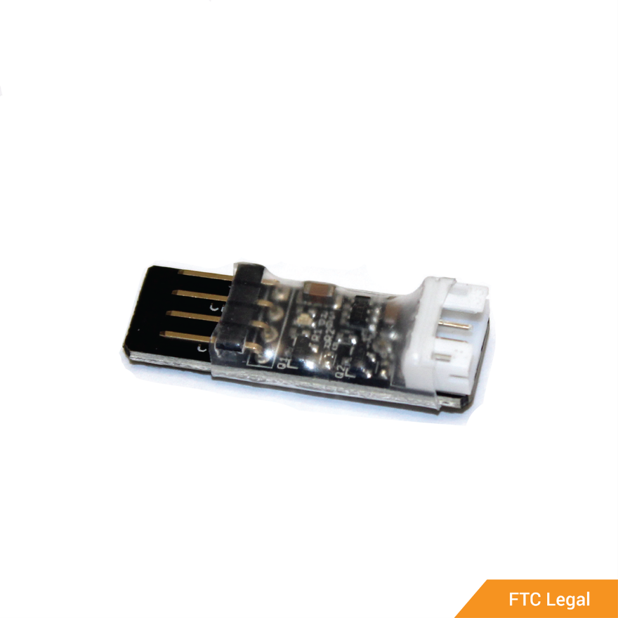
Logic level converter
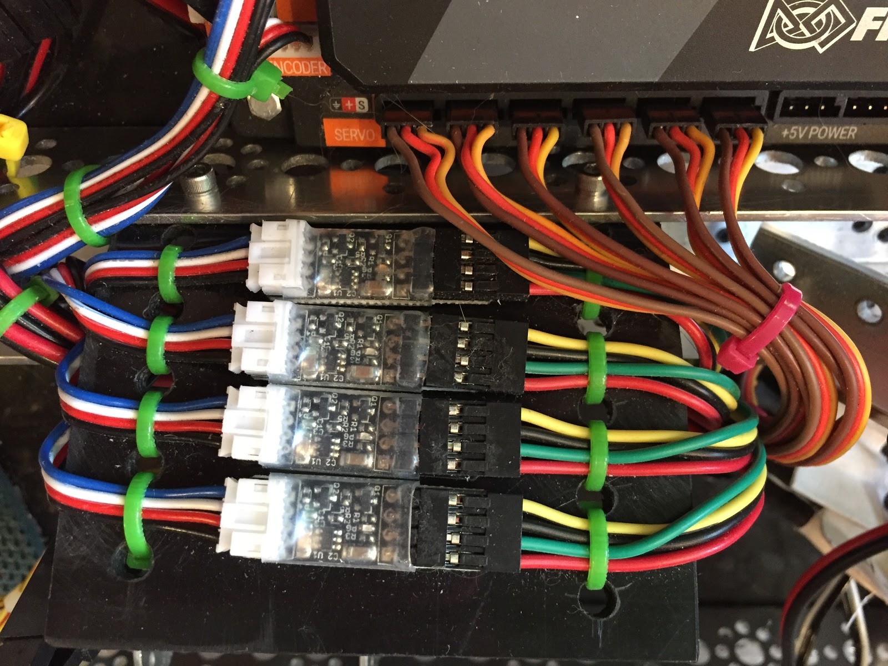
Level shifters
These level shifters are being used to interface motor encoders with the Expansion Hub. Four motors require four encoders, so four shifter modules have been mounted to a plastic bracket to minimize ESD and then bolted to the chassis. Wires leading to and from the modules have been restrained to provide strain relief to the connectors, and the cables are bundled to consume minimal space.
Common Problems and Troubleshooting
Connection Issues
Hardware Issues
Before wiring a robot, make sure to inspect the ports on all the modules. It is possible to damage the pins in the module ports. If this is the case, do not use the module; it should be sent back to the manufacturer for repairs.
Reversed Wires
The Expansion Hub and the Control Hub have three color-coded symbols that align the servo wire colors.
Be sure to match the black, red, and white wires with the color-coded symbols on the Hub.
Check the connection on servo extensions and splitters too.
Check tightness of XT30 connections. Over time the male “pins” compress, and the connector becomes loose. Follow the REV Robotics XT30 pin troubleshooting guide.
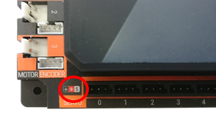
Color-coded symbols
Hub and Phone Communication Issues
The signals that pass between the Android phone and the controllers are sensitive to interference. If a motor power wire or servo wire is routed next to a USB cable, it is possible to induce a stray signal that can lead to intermittent problems.
Additional Resources
Careful incorporation of the solutions and wire management tips in this guide should help ensure more robust electrical system performance and increase robot reliability.
Basic wiring instructions are also provided by REV Robotics on their DUO Control System support pages.